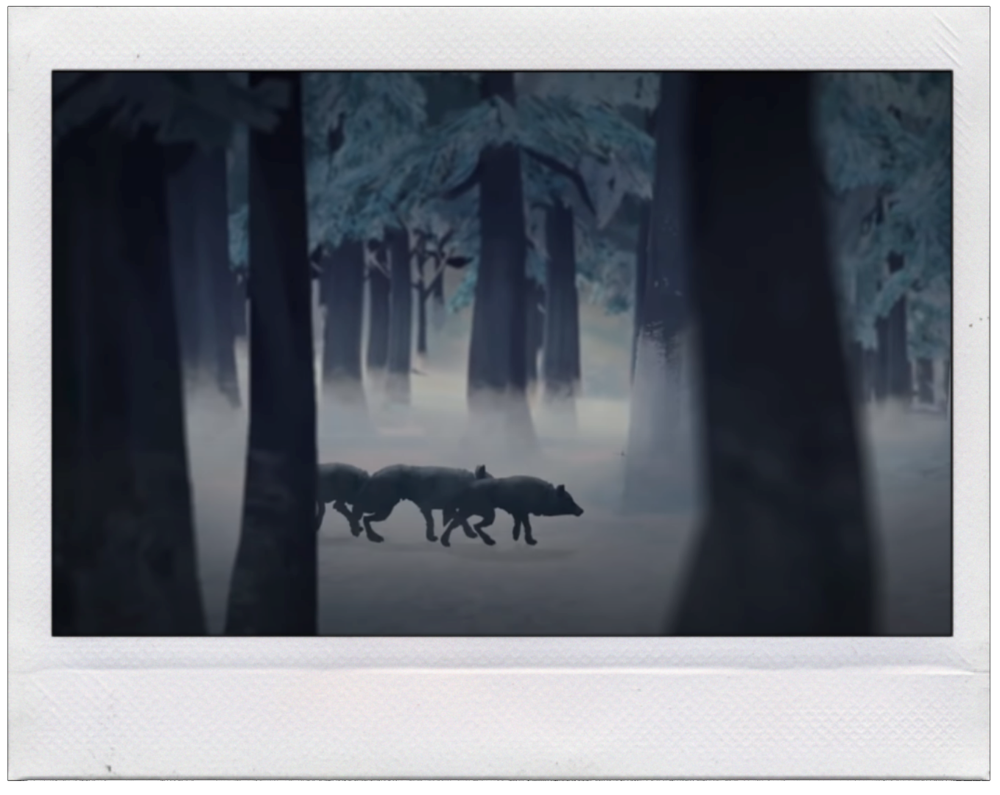
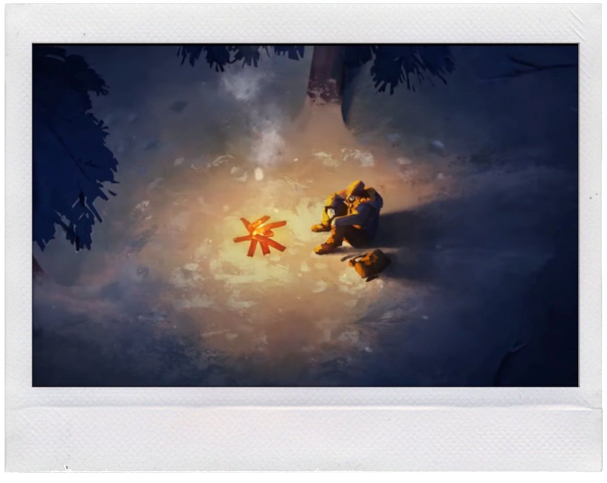
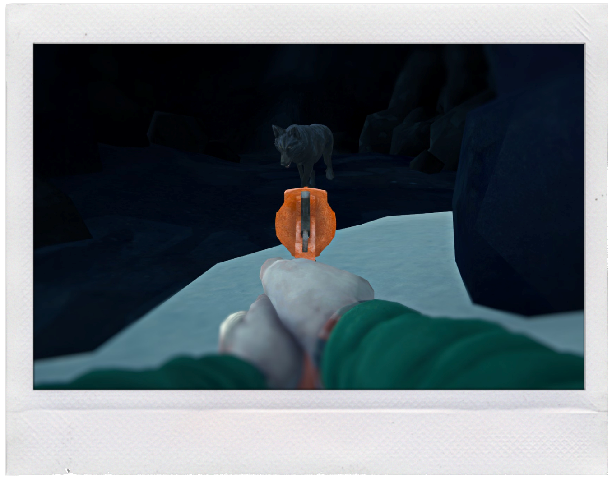

×
Restart Game
Home
Contact
Wintermute
Menu

Page 11: Quick Thinking
Wolves! They clearly smelled you coming but seem conflicted between attacking you or something huddled beneath a nearby tree stump. Astrid! You'll need to make a decicion...before the wolf pack does.

Try and Run Back to Camp
Astrid hasn't seen you and the wolves are still a reasonable distance away. If you run now you might be able to make it back to the safety of the cave!

Shoot the Closest Wolf
You take the old flaregun out of your pocket and aim it at the closest wolf. You pray the rusty old gun still works as you squeese the trigger.